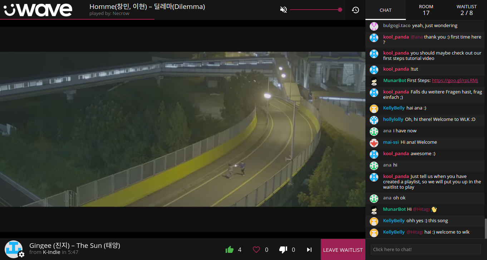

<div class="jumbotron jumbotron-fluid">
  <div class="container">
    <div class="row">
      <div class="col-sm-6">
        <p class="lead">
          üWave is a self-hosted collaborative listening platform. Users take
          turns playing media—songs, talks, gameplay videos, or anything else—from
          a variety of media sources like YouTube and SoundCloud.
        </p>
      </div>
      <div class="col-sm-6">
        
      </div>
    </div>
  </div>
</div>
